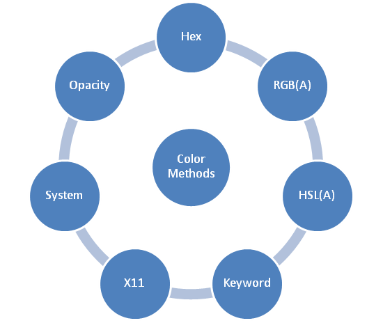

3 steg för att välja ett bra färgschema för din webbplats
Steg 1
Välja en dominerande färg som din varumärkes färg Det här är den färg som du vill att din målgrupp ska komma ihåg när de tänker på dig. Använd bara din dominerande färg på ett begränsat antal platser där du vill att besökarna på webbplatsen ska uppmärksamma, eller om du vill att dina besökare ska vidta vissa åtgärder.
Steg 2
Välja 1 till 2 accentfärger för att skapa ett färgschema för din webbplats När du väl har din dominerande färg är det väldigt lätt att hitta dina accentfärger genom att använda färgkorrigering verktyg som Adobe Color CC-tool.
Steg 3
Välja en bakgrundsfärg för att slutföra din design
Använd Adobe Color CC-tool för att skapa olika nyanser och ljusstyrka på din dominerande färg annars använd vit eller
mycket ljusgrå som din bakgrundsfärg. På detta sätt kommer innehållet alltid att skina igenom.
Varje färg har en mening

Färgvärdesnotering
Det finns tre grundläggande sätt att ange färg på, med hjälp av RGB(A), Hexadecimala eller ett färgnamn.
Färgnamn
Benämningarna och definitionerna på färgerna har kritiserats, med all rätt. Ett utmärkt exempel är att “dark gray” är ljusare
än “gray”. Samt att alla gråa färger finns två gånger med två olika stavningar “gray” och “grey”. Ett annat märkligt exempel är
att det finns en “medium violet red” men ingen “violet red” eller att det till exempel finns “light goldenrod yellow” men ingen
“goldenrod yellow” (se bild)
Numera är det inte många som använder färgnamn, men som nybörjare kan det däremot vara enklare att skriva “tomato” än “#FF6347”.
Flera färger har olika namn men är varandras motsvarighet:
- aqua / cyan
- fuchsia / magenta
- Alla varianter av grå finns i alternativen gray / grey
R, G, B
Med RGB(AA) är färgerna uppdelade, där R står för mängden röd, B står för mängden blå och
G står för mängden grön. AA är alpha och anger hur transparant en färg är.
Färgens intensitet anges som ett heltal mellan 0 och 255.
RGB-färgvärden stöds i alla webbläsare.
Hexadecimalt värde
Hexadecimala färgkoder anges med hjälp av en hashtag # i början.
En färgkod består av 6 stycken tecken där varje tecken kan vara siffrorna 0-9 eller bokstäverna A-F. Färgkoden visar intensiteten av röda, gröna och blåa komponenter.
Färgkoden #CCCCCC visar exempelvis en ljusgrå färg.
Om en färg ska träda fram maximalt mycket så anges den med FF i koden och om en färg tvärtom ska träda fram minimalt så används 00.
Vitt ljus består till exempel av alla färger så det representeras av koden #FFFFFF. Svart innehåller inga färger och har färgkoden #000000.
Det går lika bra att skriva med tre F #FFF istället för sex för att få färgen vit. Samma gäller svart #000.
| Färg | Färgnamn | R,G,B | HEX |
|---|---|---|---|
| BILD | Svart | (0,0,0) | #000000 |
| BILD | Vit | (255,255,255) | #FFFFFF |
| BILD | Röd | (255,0,0) | #FF0000 |
| BILD | Lime | (0,255,0) | #00FF00 |
| BILD | Blå | (0,0,255) | #0000FF |
HSL
HSL står där för Hue, Saturation, Lightness (nyans, mättnad och ljushet).
Exempel: --- OBS! hitta nytt!
a { color: hsl(210, 13.3%, 73.3%); }
Opacity / Transparency
Opacity används för att ange hur transparent/genomskinligt en färg ska vara. ... med ett alfavärde.
Standard är heltäckande vilket motsvarar 100% opacity.
Exempel: --- OBS! hitta nytt!
a { color: green; }